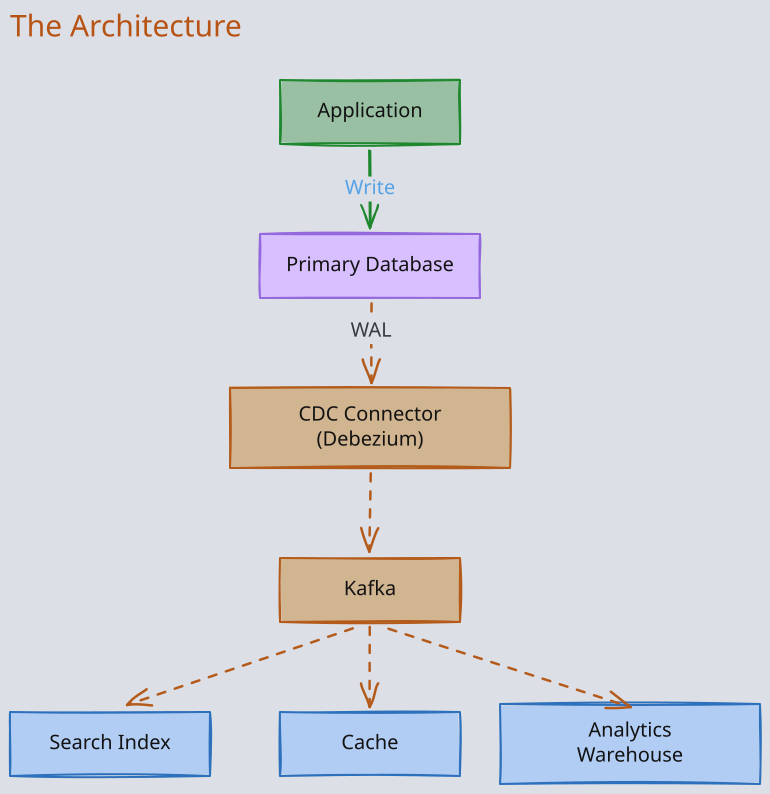
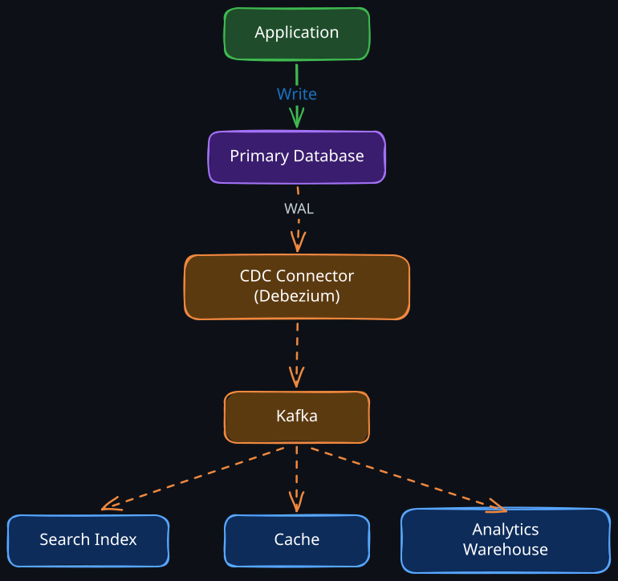
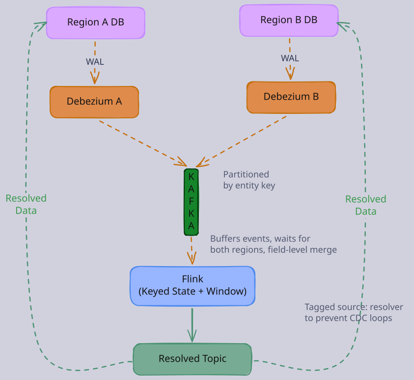
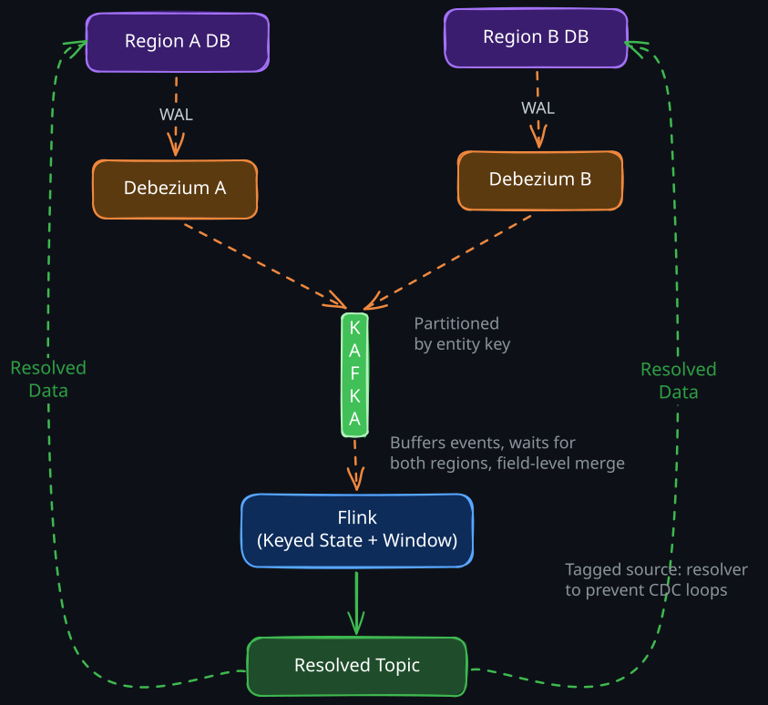

The Story
Before Kafka existed, LinkedIn had seven different bespoke data pipelines connecting various systems, each with different bugs, different delivery guarantees, and different teams maintaining them. Jay Kreps built Kafka not as a messaging system but as a commit log — and realized that the database’s internal change log could be exposed as a first-class architectural component. He named it after the novelist Franz Kafka because “it is a system optimized for writing.” The reframing — log as architecture, not implementation detail — is what makes CDC possible at scale. A data system named after a writer of bureaucratic nightmares, solving a bureaucratic nightmare of data plumbing.
Most production systems do not have a single database. They have a primary database and several derived stores — a search index for full-text queries, a cache for low-latency reads, an analytics warehouse for dashboards, a recommendation engine for personalization. The fundamental challenge is keeping these derived stores consistent with the source database. Change Data Capture (CDC) is the architectural pattern that solves this problem by treating the database’s internal change log as a stream of events that downstream systems can consume.
CDC is not a product or a specific tool. It is a design principle: the database’s write-ahead log is the single source of truth, and all derived state is built by consuming that log. This principle eliminates an entire class of consistency bugs that plague systems using dual writes.
Related Topics: 01-Kafka, 01-Elasticsearch, Ch11-Stream-Processing, Ch05-Replication, 01-Choreography-Orchestration, 02-Event-Sourcing-CQRS
1. The Problem: Why Dual Writes Fail
The naive approach to keeping derived stores in sync is “dual writes”: when the application writes to the database, it also writes to Elasticsearch and invalidates the cache in the same code path. This seems straightforward but has two critical failure modes that make it unreliable at scale.
1. Partial Failure
The application writes to PostgreSQL successfully but crashes before writing to Elasticsearch. Now the search index is permanently out of sync. The application logged no error because the crash happened between two operations. Detecting this inconsistency requires a separate reconciliation process that compares every record across systems — expensive, complex, and itself error-prone. This is not a rare edge case. At thousands of writes per second, even a 0.01% crash rate means dozens of silently inconsistent records per day.
2. Race Conditions
Two concurrent requests update the same record. Request A writes value=1 to PostgreSQL, then Request B writes value=2 to PostgreSQL. Due to network timing, Request B’s write to Elasticsearch arrives first (value=2), then Request A’s write overwrites it (value=1). Now PostgreSQL has value=2 but Elasticsearch has value=1 — permanently inconsistent, with no error logged anywhere.
This failure is particularly insidious because it cannot be prevented by retries, idempotency keys, or application-level locking. The fundamental issue is that dual writes require distributed coordination across heterogeneous systems without any coordination protocol. There is no atomic cross-system transaction to ensure all stores receive the same value in the same order.
Why These Are Not Solvable at the Application Layer
You might think “just use a distributed transaction.” But two-phase commit across PostgreSQL, Elasticsearch, and Redis is not supported by these systems, and even if it were, the performance cost would be prohibitive. You might think “just use a message queue.” But the application must atomically write to the database and publish to the queue — and that is itself a dual write.
CDC solves the problem at the right layer: below the application, at the database’s own change log.
2. How CDC Works
Every relational database maintains a write-ahead log (WAL) — a sequential, ordered record of every committed change. This is the mechanism databases use for crash recovery and replication. WAL in PostgreSQL, binlog in MySQL, oplog in MongoDB. The log already exists; CDC simply exposes it to external consumers.
1. The Architecture


The application writes only to the primary database. A CDC connector (typically Debezium) reads the WAL using the database’s native replication protocol — the same mechanism used by read replicas. Changes are published to Kafka topics, one per table. Downstream consumers subscribe to the topics they need and apply changes to their derived stores.
2. Zero Overhead on the Source
CDC via WAL tailing does not add queries, triggers, or any work to the write path. The connector reads the same log the database already writes for durability. This is fundamentally different from polling-based approaches (SELECT * WHERE updated_at > ?) which add read load proportional to the polling frequency and miss deletes entirely.
3. The Change Event Structure
Each CDC event carries the full context needed for downstream processing:
{
"before": {"id": 123, "email": "alice@old.com", "phone": "555-1234", "version": 5},
"after": {"id": 123, "email": "alice@new.com", "phone": "555-1234", "version": 6},
"source": {
"connector": "postgresql",
"db": "production",
"table": "users",
"ts_ms": 1709654400000,
"txId": 98765,
"lsn": 234881024
},
"op": "u"
}The op field indicates the operation: `
- c
for create (insert) - u
for update - d` for delete
- The
beforeandafterfields capture the row state before and after the change.
The source metadata includes the database transaction ID and log sequence number (LSN), which provide total ordering guarantees.
The before/after pair is what makes CDC powerful beyond simple replication. By comparing the two, a consumer can determine exactly which fields changed — enabling field-level merge logic that would be impossible with just the new value.
3. Why CDC Eliminates Dual Write Failures
1. No Partial Failures
The application writes only to the database. If the application crashes, the database either committed the transaction or it did not — there is no in-between state across systems. The CDC pipeline is a separate, restartable process. If the connector crashes, it resumes from the last WAL position it processed. Every committed change eventually propagates to all downstream stores. The guarantee is exactly-once delivery to Kafka (with transactional producers) or at-least-once with idempotent consumers.
2. No Race Conditions
The WAL defines a total order of changes within the source database. All downstream consumers see changes in exactly the same order. If two concurrent transactions modify the same row, the WAL records them in commit order. All derived stores apply them in that same order. There is no possibility of one store seeing A-then-B while another sees B-then-A.
This ordering guarantee is the single most important property of CDC. It is what makes the pattern fundamentally more reliable than any application-layer coordination scheme.
4. CDC Use Cases
1. Keeping Search Indexes in Sync
Consume the CDC stream from the primary database and apply inserts, updates, and deletes to 01-Elasticsearch. Since changes arrive in WAL order, the search index converges to the same state as the source database. New documents are indexed within seconds of being written to the database.
The ingestion pipeline denormalizes data during consumption: when an orders event arrives, the consumer enriches it with user profile data (from a local cache maintained by the users CDC stream) before writing to Elasticsearch. This produces search-optimized documents without the source database needing to store denormalized data.
2. Reactive Cache Invalidation
Instead of proactive cache invalidation in application code (which suffers from the same dual-write problems), consume CDC events and invalidate or update cache entries reactively. This guarantees that every database change eventually invalidates the corresponding cache entry, even if the application process that made the change crashes immediately after the commit.
The pattern is straightforward: subscribe to the CDC stream, extract the primary key from each event, and DELETE the corresponding cache key. The next read will miss the cache and fetch fresh data from the database. This is simpler and more reliable than scattering cache invalidation calls throughout application code.
3. Building Materialized Views
Aggregate CDC events to maintain pre-computed views — daily revenue totals, per-user order counts, real-time dashboards. The CDC stream is the input to a stream processor (Flink, Kafka Streams) that maintains running aggregates. When a new order is committed, the revenue counter updates within seconds.
The advantage over database-native materialized views is that the computation happens outside the database, in a horizontally scalable stream processor. This offloads work from the primary database and allows the materialized view to be stored in any system optimized for the query pattern.
4. Multi-Leader Conflict Resolution
In multi-region deployments with active-active writes, each region runs its own Debezium connector tailing the local database’s WAL. Both connectors publish CDC events to the same Kafka cluster, partitioned by entity key. But Kafka alone is just a transport layer — it cannot hold state or wait for a corresponding event from the other region. A stateful stream processor like Flink sits between Kafka and the resolved output. Flink keys the stream by entity ID, buffers incoming CDC events in a windowed state store, and waits for the corresponding event from the other region (or times out after a configurable window). Once both sides arrive — or the window expires — Flink performs field-level merge by comparing the before/after states from each region:


- Region A changes
email, leavesphoneunchanged. - Region B changes
phone, leavesemailunchanged. - Different fields changed: merge both changes. No conflict.
When both regions change the same field, the resolver applies domain-specific logic: pick the latest by login timestamp, sum deltas for balance fields, or flag for human review. This is far more sophisticated than last-write-wins, which silently discards one change.
Kafka’s partitioning by entity key ensures all events for the same record land on the same partition. Flink processes each partition in a single task, so the keyed state for a given entity is always accessed by one thread — no distributed locking needed.
The resolved state must flow back to both regional databases so they converge. Flink writes the merged result to a Kafka “resolved” topic, and each region’s consumer applies the resolved record to its local database. To prevent infinite CDC loops — where the resolved write generates a new CDC event that re-enters the pipeline — each resolved record is tagged with a source: resolver marker. The regional Debezium consumers filter out events with this marker, breaking the cycle.
5. Feeding Analytics and ML Pipelines
CDC provides a real-time data feed from operational databases to analytics warehouses (Snowflake, BigQuery) and feature stores. Instead of nightly batch ETL jobs that create hours-long data staleness, CDC delivers changes within seconds. This enables near-real-time dashboards, faster fraud detection model training, and fresher recommendation features.
5. Implementation Approaches
1. WAL Tailing (Production Standard)
Tools like Debezium, Maxwell (MySQL), and AWS DMS connect to the database’s replication protocol and stream changes to Kafka. Debezium is the most widely used open-source option and supports PostgreSQL, MySQL, MongoDB, SQL Server, and Oracle.
Advantages:
- Zero impact on write performance (reads the existing log)
- Captures all changes including deletes (unlike polling)
- Preserves transaction ordering
- Captures schema changes (DDL events)
Operational requirements:
- The database must be configured for logical replication (PostgreSQL) or row-based binlog (MySQL)
- The WAL retention period must exceed the maximum expected connector downtime
- Debezium requires a Kafka Connect cluster for deployment
2. Database Triggers (Avoid in Production)
Triggers fire on every INSERT, UPDATE, or DELETE and push changes to an external system. This adds latency to every write (the trigger runs inside the transaction), and trigger failures can block application writes. Triggers cannot capture schema changes and are difficult to maintain across schema evolution. Use WAL tailing instead.
3. Polling (Last Resort)
Query the database periodically: SELECT * FROM users WHERE updated_at > :last_check. This misses deletes entirely (the row is gone), cannot guarantee ordering, adds read load to the database, and has latency proportional to the polling interval. Acceptable only when WAL tailing is not available (legacy systems without replication support).
6. Operational Considerations
1. Initial Snapshot
When CDC is first enabled on an existing table, the connector must capture the current state of all rows before streaming incremental changes. Debezium handles this with an initial snapshot: it reads the entire table, publishes each row as a “create” event, records the current WAL position, then switches to streaming mode. During the snapshot, the table is not locked (Debezium uses consistent snapshots via repeatable read transactions). For large tables (billions of rows), the initial snapshot can take hours. Plan for this during the first deployment. Subsequent connector restarts resume from the last committed WAL offset — no re-snapshot needed.
2. Schema Evolution
When the source database schema changes (add column, rename column, change type), the CDC events must reflect the new schema. Debezium detects DDL changes and updates the event schema automatically. Downstream consumers must handle schema evolution gracefully — typically by using a schema registry (Confluent Schema Registry) with backward-compatible Avro schemas. The critical rule: never remove or rename a column without ensuring all consumers have been updated first. A consumer that expects a field that no longer exists will fail. Use a two-phase approach: add the new column, update all consumers to use it, then remove the old column.
3. Cross-Table Consistency
If an application transaction writes to both orders and order_items, the CDC stream will contain separate events for each table. Downstream consumers that need to join these events must recognize they belong to the same logical transaction. Debezium’s txId metadata helps: events with the same transaction ID were committed atomically and can be buffered until the transaction boundary is reached.
For strict cross-table consistency, configure Debezium with transaction.topic.prefix to emit transaction boundary markers. The consumer accumulates events until it sees a transaction commit marker, then processes the entire batch atomically.
4. Monitoring and Alerting
CDC pipeline health is measured by three metrics:
- Connector lag. The difference between the current WAL position and the connector’s position. If the connector falls behind, downstream stores become stale. Alert when lag exceeds the freshness SLA (typically 30 seconds to 5 minutes).
- Kafka consumer lag. The difference between the latest offset in a Kafka topic and a consumer’s committed offset. Each downstream consumer may lag independently. Monitor per-consumer.
- Event throughput. A sudden drop in event throughput may indicate a connector failure, database issue, or network partition. A sudden spike may indicate a bulk data migration that the pipeline must handle without falling behind.
7. When CDC Falls Short
- Latency. The pipeline (WAL -> Debezium -> Kafka -> consumer -> derived store) adds seconds of delay. For use cases requiring sub-100ms propagation (real-time collaborative editing, financial order matching), CDC is too slow. These systems need in-process event emission or direct write-through patterns.
- Operational complexity. Running Kafka, Debezium connectors, schema registry, and consumer services is significant infrastructure. Schema changes in the source database require coordinated updates across the pipeline. For simple systems with a single database and a cache, the complexity may not be justified.
- High-throughput bulk operations. A batch job that updates 10 million rows generates 10 million CDC events. If the downstream consumer cannot keep up, lag grows unboundedly. For bulk operations, consider pausing CDC temporarily and performing a targeted re-sync after the bulk update completes.
- No cross-database transactions. CDC provides ordering within a single source database. If your system writes to two separate databases and you need cross-database consistency in derived stores, CDC alone is insufficient. You need an application-level coordination pattern (saga, outbox pattern) upstream of CDC.
8. The Outbox Pattern: Reliable Event Publishing
A common challenge adjacent to CDC is publishing domain events reliably. The application wants to commit a database change and publish an event to Kafka atomically. But writing to the database and Kafka is a dual write.
The outbox pattern solves this: instead of publishing directly to Kafka, the application writes the event to an outbox table in the same database transaction as the business data. A CDC connector tails the outbox table and publishes events to Kafka. Since both the business write and the event write are in the same transaction, they are atomic. The CDC connector guarantees the event eventually reaches Kafka.
BEGIN;
INSERT INTO orders (id, user_id, total) VALUES (456, 123, 99.99);
INSERT INTO outbox (aggregate_id, event_type, payload)
VALUES (456, 'OrderCreated', '{"order_id": 456, "user_id": 123, "total": 99.99}');
COMMIT;Debezium’s outbox event router can transform outbox table events into properly structured Kafka messages, routing them to topic names derived from the event_type column. The outbox table is periodically truncated, but truncation is only safe after the CDC connector has confirmed it has read and published all events up to a certain offset. In practice, the connector tracks its position in the outbox via a committed Kafka Connect offset or a high-water mark. Rows with IDs below the connector’s confirmed position can be safely deleted; truncating above it causes permanent event loss. If the connector crashes before confirming, it re-reads from its last confirmed position on restart, producing duplicates — this is at-least-once delivery, which downstream consumers must handle idempotently.
Revision Summary
- Dual writes (application writing to database and derived stores) fail due to partial failures and race conditions that are unsolvable at the application layer
- CDC tails the database’s write-ahead log (WAL) and streams changes to Kafka, preserving the total ordering of committed transactions
- WAL tailing (Debezium) has zero overhead on the source database because it reads the existing replication log
- Each CDC event carries
before/afterrow state, enabling field-level diff and smart conflict resolution - Primary use cases: search index sync, cache invalidation, materialized views, analytics pipelines, multi-leader conflict resolution
- The outbox pattern combines CDC with transactional event publishing to guarantee atomic business writes and event emission
- Operational essentials: initial snapshot for first deployment, schema evolution via registry, cross-table consistency via transaction markers, lag monitoring
- CDC adds seconds of latency; it is not suitable for sub-100ms propagation requirements
Deep Understanding Questions
-
A CDC pipeline streams changes from PostgreSQL to Elasticsearch. A developer adds a new column
middle_nameto theuserstable without updating the Elasticsearch index mapping. What happens to CDC events that include this new field? How does the failure manifest, and what is the correct deployment sequence to prevent it? Ans: -
Two concurrent transactions update the same row in PostgreSQL. Transaction A commits first (setting
status = 'active'), then Transaction B commits (settingstatus = 'suspended'). The CDC stream delivers both events in commit order. But the Elasticsearch consumer processes them out of order due to a retry. What is the final state in Elasticsearch? How would you prevent this — and is it the CDC layer’s responsibility or the consumer’s? Ans: -
A CDC connector falls behind by 2 hours due to a Kafka broker failure. When the broker recovers, the connector replays 2 hours of WAL events. During this replay, the connector is also receiving new real-time events. How does Debezium handle this? Could downstream consumers see events out of order? What safeguards prevent this? Ans:
-
An application uses the outbox pattern to publish
OrderCreatedevents. The outbox table grows to 100 million rows because truncation has not been configured. What performance impact does this have on the source database? On the CDC connector? How would you design the cleanup process to be safe? Ans: -
A multi-region system uses CDC from each region’s database to feed a central conflict resolver. Region A and Region B both update user 123’s
emailfield within the same second. The resolver receives both events on the same Kafka partition. How does it determine which update “wins”? What if the timestamps are identical? What metadata beyond the event itself might be needed? Ans: -
A CDC pipeline populates a Redis cache by consuming change events and writing to Redis. The application also uses cache-aside pattern, populating the cache on read misses. These two mechanisms can race: the CDC consumer writes an older value to Redis after the application has already written a newer value from a direct database read. How would you prevent this stale-write problem? Ans:
-
A bulk migration updates 50 million rows in a single transaction. This generates a 50-million-event CDC burst. The Kafka cluster can handle the throughput, but the Elasticsearch consumer cannot index 50 million documents fast enough. What strategies exist for handling CDC bursts from bulk operations without dropping events or falling permanently behind? Ans:
-
The outbox pattern writes events to an outbox table in the same transaction as business data. But what if the business logic requires reading the result of a previous event before proceeding? For example, an
OrderCreatedevent must be consumed by the Inventory Service before the Shipping Service can proceed. The outbox pattern guarantees publication but not consumption. How do you handle this cross-service dependency? Ans: -
A CDC consumer maintains a local materialized view by joining
ordersandusersCDC streams. Anorderevent arrives, but the correspondinguserrecord has not yet appeared in theusersCDC stream (the user was just created in a slightly later transaction). How does the consumer handle this temporal join mismatch? What data structures and buffering strategies are needed? Ans: -
CDC captures every committed change, including those from automated maintenance operations (vacuum, reindex, partition maintenance). Could these operations generate spurious CDC events that trigger unintended downstream processing? How does Debezium distinguish application writes from maintenance operations? Ans: